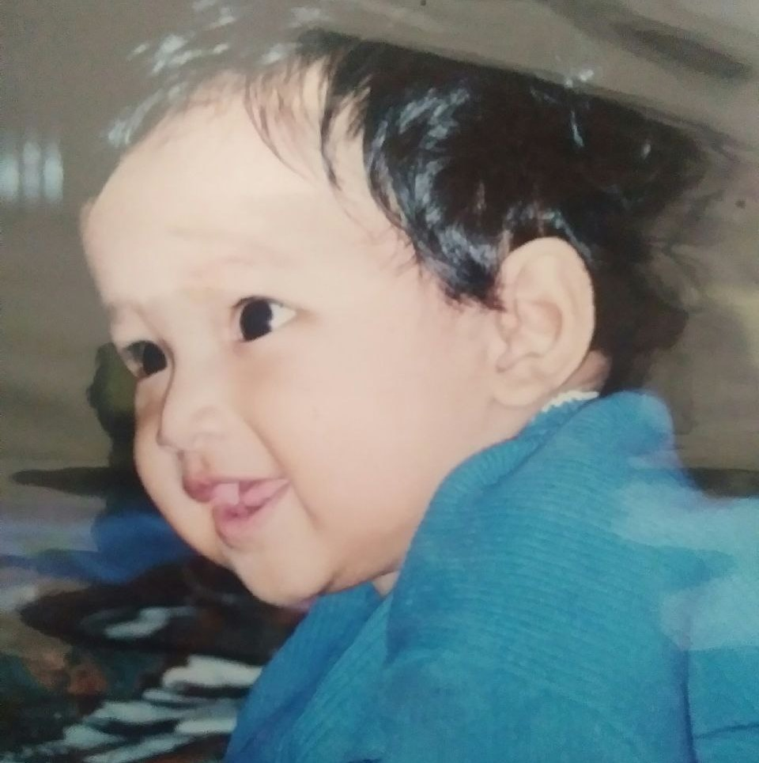
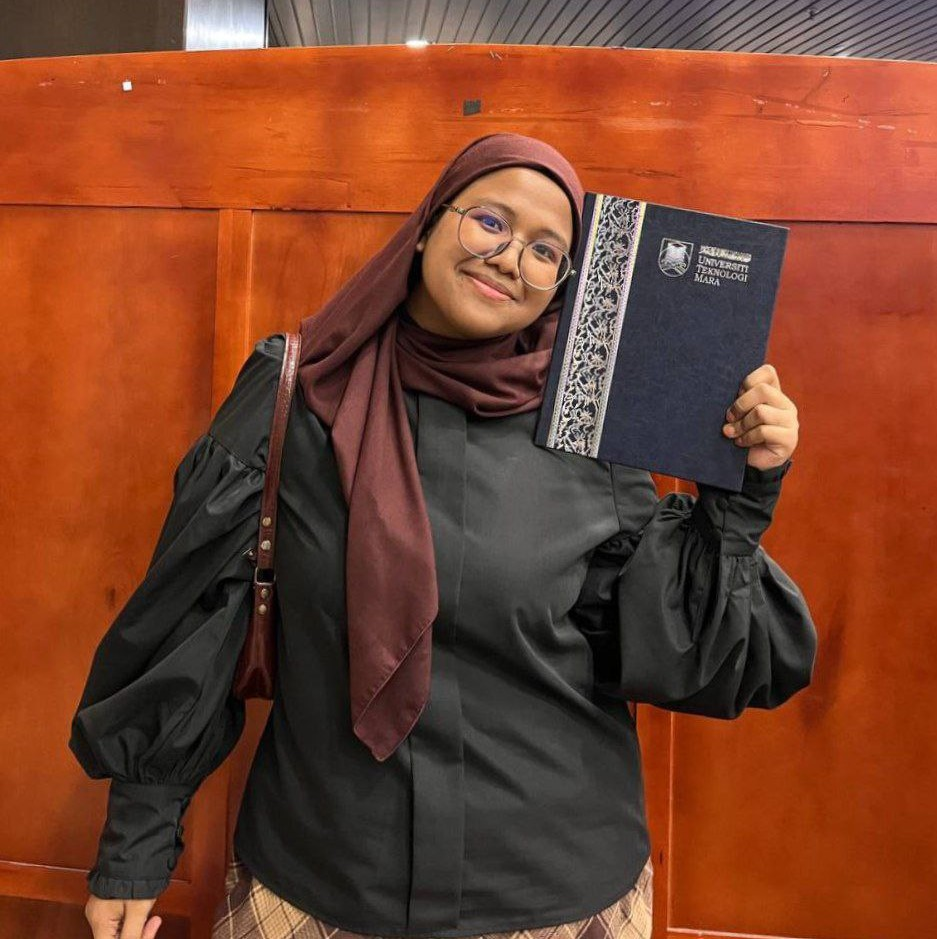

5 Months

15 Years old

NAME: KASIH LATIFAH BINTI MOHD YAZID.
AGE: 20 YEARS OLD
DATE OF BIRTH: 19TH APRIL 2002
PLACE OF BIRTH: HOSPITAL TENGKU AMPUAN RAHIMAH KLANG.
ADDRESS: No 15, JALAN BAKTI 7/KU3, TAMAN PINANG RAJA, SUNGAI PINANG 42100 KLANG, SELANGOR.
GENDER: FEMALE CITIZENSHIP: MALAYSIAN
SIBLINGS: OLDER FROM 2 SIBLINGS
YOUNGER BROTHER: NAZRA SOFEA BINTI MOHD YAZID
FATHER'S NAME: MOHD YAZID BIN HASHIM
MOTHERS' NAME: NORHAINIRIZAN BINTI ARIFIN
SPECIALTIES: FIND INFORMATION, LISTENING TO MUSIC, FOOD HUNTING AND MANY MORE
DECLARATION: I DO HERE BY DECLARE THAT ALL THE ABOVE INFORMTAION IS
TRUE TO THE BEST OF MY KNOWLEDGE AND BELIEF.